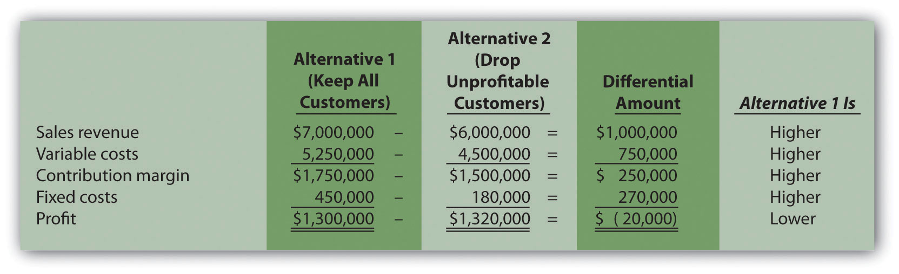
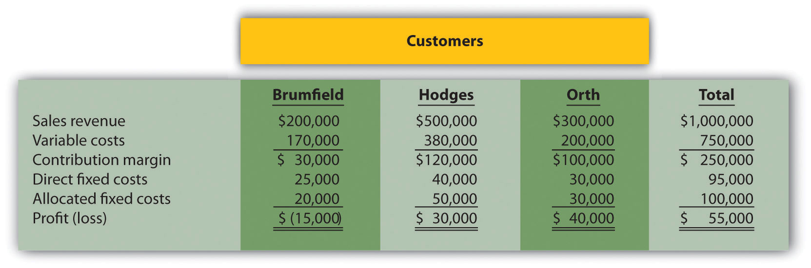
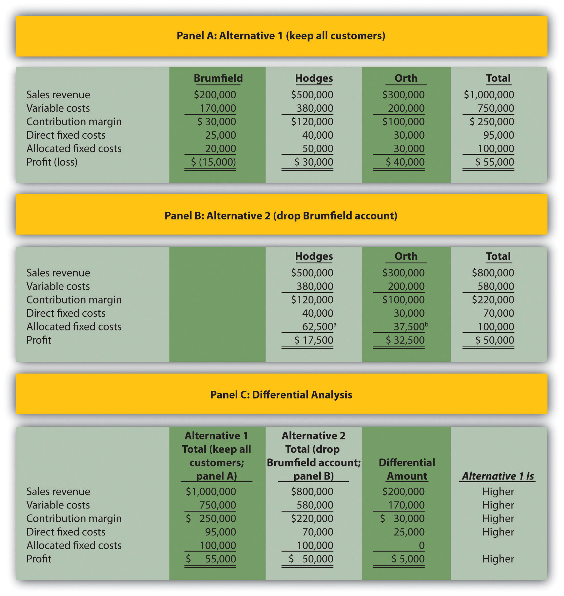
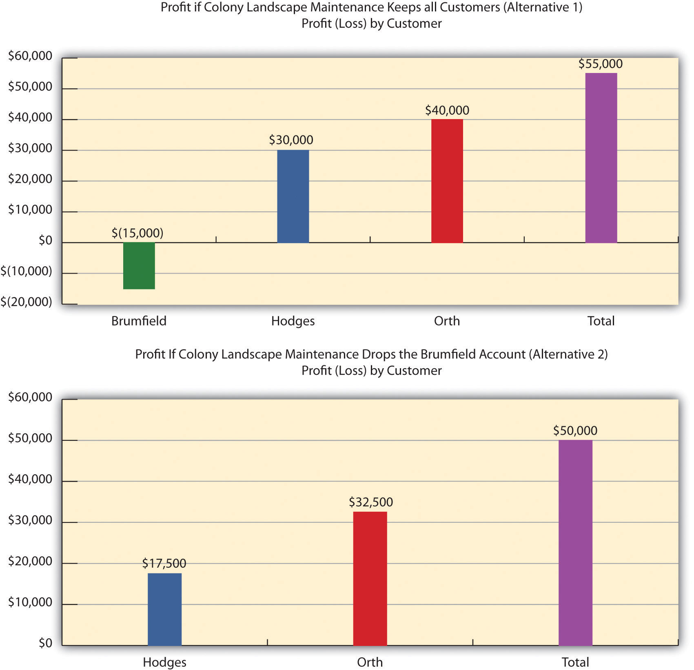
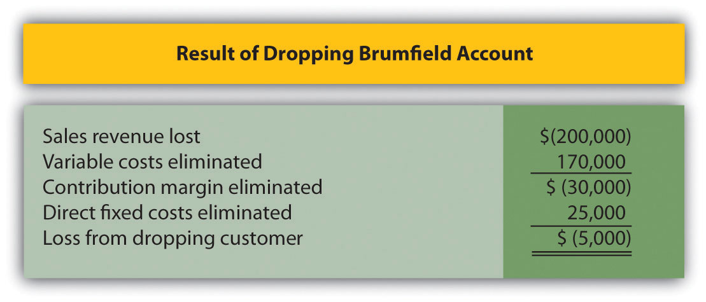
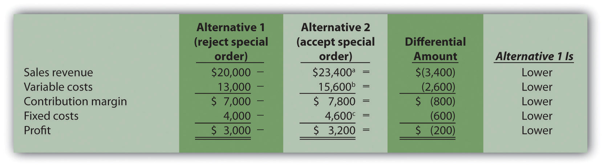
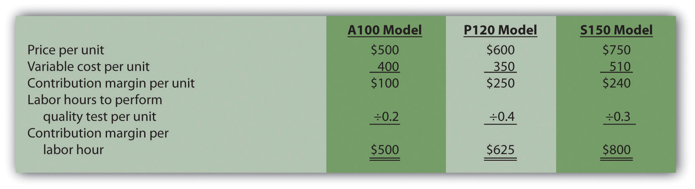

Bob Lee is president of Best Boards, Inc., a manufacturer of wakeboards. In the face of stiff competition, Best Boards’ profits have declined steadily over the past few years. Bob is concerned about the decline in profits and has instructed Jim Muller, the vice president of operations, to do whatever it takes to reduce costs. In fact, Bob offered to pay Jim a bonus equal to 25 percent of any production cost savings the company achieves during the coming year.
Jim Muller thinks he has a way to cut costs and earn his bonus, and he approaches Bob Lee and Amy Eckstrom, the company’s accountant, to discuss his plan:
| Jim: | Bob and Amy, I hope you’ve had a chance to review my proposal to outsource production. I think it could save the company thousands of dollars this coming year. |
| Bob: | I did review your proposal. Give me a quick summary of what you have in mind. |
| Jim: | Our staff accountants tell me that the average unit product cost for our wakeboards is about $110, and we make 10,000 wakeboards each year. |
| Amy: | Sounds about right. |
| Jim: | My thought is that we could save substantial amounts of money by having an outside supplier make our wakeboards rather than doing it ourselves. I contacted one reputable wakeboard manufacturer interested in producing the boards for us. |
| Bob: | What did you find? |
| Jim: | They told me the wakeboards could be purchased from them for $70 a board. This amounts to $40 in savings per unit, and $400,000 in total savings! Even after my 25 percent bonus of $100,000, Best Boards would save $300,000. |
| Amy: | Jim has an interesting idea, but there are some issues that should be considered. Jim, you are correct in stating the average unit product cost for our wakeboards is $110 given production of 10,000 units per year. However, it is not accurate to assume we will eliminate $1,100,000, which is $110 per unit cost times 10,000 units, in total production costs by outsourcing production. The average unit cost includes factory equipment lease payments, along with supervisors’ salaries, and factory rent. These costs don’t go away quickly if we stop production. The equipment lease is for several years, we are locked into a long-term lease for the factory building, and we would have to look at our supervisors’ contracts before letting them go. |
| Bob: | Can we get a better idea of which costs would be eliminated by outsourcing production, and which costs would remain? |
| Amy: | Sure. I’ll get a team working on this right away. |
Best Boards is facing a decision common to many organizations: whether to build its own product or to have another company build the product. We will come back to this scenario after describing how companies facing such decisions can use differential analysis to make wise business decisions.
Differential revenues and costsThe difference in revenues and costs from one alternative to another (also called relevant revenues and costs or incremental revenues and costs). (also called relevant revenues and costs or incremental revenues and costs) represent the difference in revenues and costs among alternative courses of action. Analyzing this difference is called differential analysisThe process of analyzing differential revenues and costs from one alternative to another (also called incremental analysis). (or incremental analysis). We begin with a relatively simple example to establish the format used to perform differential analysis and present more complicated examples later in the chapter. As you work through this example, notice that we also use the contribution margin income statement format presented in Chapter 5 "How Do Organizations Identify Cost Behavior Patterns?" and Chapter 6 "How Is Cost-Volume-Profit Analysis Used for Decision Making?".
Question: Assume Phillips Accountancy provides bookkeeping, tax, and audit services to its clients. Management believes Phillips Accountancy has several unprofitable customers and would like to perform differential analysis to find out how profits would change if Phillips dropped these customers. Alternative 1 includes the annual revenues, costs, and resulting profit if the company keeps all existing customers. Alternative 2 includes the annual revenues, costs, and resulting profit if the company drops what it believes are unprofitable customers. How should management decide whether to keep all existing customers or drop certain customers?
Answer: Figure 7.1 "Differential Analysis for Phillips Accountancy" presents the format used by management to perform differential analysis. In this case, differential analysis is used to evaluate whether Phillips Accounting should keep all customers or drop unprofitable customers. The information in Figure 7.1 "Differential Analysis for Phillips Accountancy" confirms that Phillips Accountancy would be better off dropping the unprofitable customers (Alternative 2), because company profits would increase by $20,000. The general rule is to select the alternative with the highest differential profit. Take a close look at Figure 7.1 "Differential Analysis for Phillips Accountancy" before reading the description of this information that follows.
Figure 7.1 Differential Analysis for Phillips Accountancy
Notice that in Figure 7.1 "Differential Analysis for Phillips Accountancy" the columns labeled Alternative 1 and Alternative 2 show revenues, costs, and profit for each alternative. The third column, labeled Differential Amount, presents the differential revenues and costs and resulting differential profit. Positive amounts appearing in this column indicate Alternative 1 is higher than Alternative 2. Negative amounts appearing in the Differential Amount column indicate Alternative 1 is lower than Alternative 2. The fourth column shows whether Alternative 1 is higher or lower than Alternative 2 for each line item.
For example, the differential amount of $1,000,000 for revenue indicates Alternative 1 produces $1,000,000 more in revenue than Alternative 2. The differential amount of $750,000 for variable costs indicates variable costs are $750,000 higher for Alternative 1 than for Alternative 2. Move to the bottom of Figure 7.1 "Differential Analysis for Phillips Accountancy". Notice that the differential amount for profit is negative ($20,000). This indicates that Alternative 1 results in profits that are $20,000 lower than Alternative 2. Thus Alternative 2 (dropping unprofitable customers) is the desirable course of action.
Notice that the columns labeled Alternative 1 and Alternative 2 show information in summary form (i.e., no detail is provided for revenues, variable costs, or fixed costs). Some managers may want only this type of summary information, whereas others may prefer more detailed information. It is important to be flexible with the format, to best meet the needs of managers. We will build upon the differential analysis format shown in Figure 7.1 "Differential Analysis for Phillips Accountancy" throughout this chapter, and show how more detail can easily be provided using the same format.
Next, this chapter focuses on how we use differential analysis to assist in making the following types of decisions:
Coffee Express is a small coffee shop looking to expand its product offerings beyond coffee. The company is evaluating two alternatives—sandwiches and cookies. Annual projections for sales of sandwiches are as follows: sales, $18,000; variable costs, $13,000; and fixed costs, $500. Annual projections for sales of cookies are as follows: sales, $10,000; variable costs, $3,000; and no additional fixed costs.
Using the format in Figure 7.1 "Differential Analysis for Phillips Accountancy", perform differential analysis to determine which alternative is more profitable, and by how much. Assume adding sandwiches is Alternative 1 and adding cookies is Alternative 2.
Solution to Review Problem 7.1
As shown in the differential analysis given, selling cookies is the most profitable alternative. Selling cookies results in profits of $7,000 for the year, which is $2,500 higher than the sandwich alternative.
Question: With the differential analysis format in hand, we can now go back to Best Boards, Inc., introduced at the beginning of the chapter. Recall that Best Boards produces each wakeboard for $110, and Jim Muller, vice president of operations, received a bid for $70 per board from an outside manufacturer. Best Boards’ president asked the company’s accountant, Amy Eckstrom, to investigate whether it makes sense for Best Boards to hire an outside company to produce the wakeboards. What information should Amy provide that will help management make this decision?
Answer: Table 7.1 "Make-or-Buy Decision" presents the costs that the vice president of operations at Best Boards must evaluate in deciding whether to make the wakeboards or buy them from an outside company. This is called a make-or-buy decision because the company must decide whether to make the product internally or buy the product from an outside firm (often called outsourcing).
Table 7.1 Make-or-Buy Decision
| Costs to Make Wakeboard | Costs to Buy Wakeboard | |
|---|---|---|
| Variable production costs | Direct materials | Wakeboards from supplier |
| Direct labor | ||
| Manufacturing overhead | ||
| Fixed production costs | Factory equipment lease | Factory equipment lease |
| Factory building rent | Factory building rent | |
| Supervisor salaries | Supervisor salaries |
Question: What information did Amy find to help Best Boards with the decision whether to make their own wakeboards or buy them from an outside supplier?
Answer: After further research, Amy identified the following product costs associated with wakeboard production at Best Boards:

Since Best Boards produces 10,000 wakeboards each year, the product cost per unit is $110 (= $1,100,000 ÷ 10,000 units). However, Amy must identify which of the costs listed previously are differential costs if the company acquires the wakeboards from an outside producer. That is, Amy must determine which costs will change and which will remain the same. Here’s what she found:
Question: Amy must now prepare a differential analysis to determine which alternative is best for the company. Her analysis appears in Figure 7.2 "Make-or-Buy Differential Analysis for Best Boards, Inc.". Because the focus of make-or-buy decisions is on product costs, and because sales revenue is not differential to this decision, it is not necessary to include sales revenue in the analysis. This in turn eliminates the need to show the contribution margin or net income. (Even if sales revenue were included, the outcome would remain the same.) What does Amy’s analysis tell us?
Figure 7.2 Make-or-Buy Differential Analysis for Best Boards, Inc.

a $700,000 = $70 per unit × 10,000 units.
b One supervisor must be paid $90,000 per year even if the company buys the product. The other supervisor, who is paid $50,000 per year, can be let go if the company buys the product.
Answer: Realizing that the information shown in Figure 7.2 "Make-or-Buy Differential Analysis for Best Boards, Inc." does not provide the savings initially hoped for, Amy presents the unfavorable analysis to Jim Muller and the company’s president, Bob Lee. Refer to Figure 7.2 "Make-or-Buy Differential Analysis for Best Boards, Inc." as you follow Amy’s comments to Bob and Jim about her analysis.
| Bob: | Hi, Amy, what have you got for us? |
| Amy: | As you can see from my analysis, outsourcing the production of our wakeboards does not reduce overall production costs. |
| Jim: | How can that be? I got a bid from an outside supplier for $70 per board, and our cost to produce the very same board is $110. |
| Amy: | As I mentioned before, the $110 includes costs that do not go away if we outsource production. Let’s look at my analysis. Alternative 1 represents the production costs we incur to make the board ourselves, and Alternative 2 represents the costs we incur if we buy the board from an outside supplier using Jim’s quote of $70 each. |
| Jim: | Well, this certainly explains where the $110 product cost per board comes from if we produce the boards ourselves. I see the total cost of $1,100,000. Divide this by 10,000 units produced annually, and the resulting cost per unit is $110. |
| Amy: | Exactly! Now let’s look at Alternative 2 more carefully. Although we eliminate all variable product costs such as direct materials and direct labor by outsourcing production, several fixed product costs remain. We still must lease the factory equipment at a rate of $110,000 per year, and the factory building lease of $290,000 per year is in effect for several more years. Also, one of our factory supervisors has a long-term contract for $90,000 per year and cannot be let go any time soon. None of these costs can be eliminated if we outsource production. Add these costs to the $700,000 cost incurred to purchase the boards from a supplier, and the total cost of $1,190,000 is $90,000 higher than if we produce the boards ourselves. |
| Bob: | Perhaps we should consider outsourcing in a few years as these long-term commitments expire. Jim, I commend you for your creative approach to reducing costs, but the numbers don’t make it feasible for us to discontinue production and buy the products elsewhere. |
Question: The Differential Amount column presented in Figure 7.2 "Make-or-Buy Differential Analysis for Best Boards, Inc." indicates Best Boards would be better off producing wakeboards internally. However, management may want a more concise explanation of why production costs are $90,000 higher when outsourcing production. How can we present this information in a more concise format?
Answer: We show a more concise presentation in Figure 7.3 "Summary of Differential Analysis for Best Boards, Inc.", which includes the Differential Amount column shown in Figure 7.2 "Make-or-Buy Differential Analysis for Best Boards, Inc." along with a brief description for each item. Look closely at Figure 7.2 "Make-or-Buy Differential Analysis for Best Boards, Inc." to confirm that the Differential Amount column matches Figure 7.3 "Summary of Differential Analysis for Best Boards, Inc.", and review the explanation of the difference for each line item. As you compare these two figures, notice that only differential costs are presented in Figure 7.3 "Summary of Differential Analysis for Best Boards, Inc.", and therefore costs for the factory equipment lease, factory building rent, and a portion of supervisor salaries are excluded from Figure 7.3 "Summary of Differential Analysis for Best Boards, Inc.". That is, costs that do not differ from one alternative to another are excluded from the summary differential analysis since this information is irrelevant to the decision. The amounts in parentheses in Figure 7.3 "Summary of Differential Analysis for Best Boards, Inc." indicate a negative impact on profit, and amounts without parentheses indicate a positive impact on profit.
Figure 7.3 Summary of Differential Analysis for Best Boards, Inc.

Note: Amounts shown in parentheses indicate a negative impact on profit, and amounts without parentheses indicate a positive impact on profit.
The analysis shown in Figure 7.3 "Summary of Differential Analysis for Best Boards, Inc." is particularly useful if all costs are not easily identified, and differential costs can be determined. After all, the goal of differential analysis is to analyze the costs that differ from one alternative to the next.
We often use the term avoidable costA cost that can be avoided, or eliminated, if one alternative is chosen over another. to describe a cost that can be avoided, or eliminated, if one alternative is chosen over another. If Best Boards chooses to buy the product from an outside producer, the company avoids such costs as direct materials, direct labor, manufacturing overhead, and the salary of one supervisor. In this context, avoidable cost is the same as differential cost.

Source: Photo courtesy of C.G.P. Grey, http://www.cgpgrey.com/.
Outsourcing Construction
Salt Lake City, Utah, recently built a $65 million library. The library’s façade was assembled from precast concrete panels that a company called Pretecsa produced in a plant near Mexico City. Trucks hauled 140 truckloads of these panels—each truckload averaging 10 tons—2,350 miles from Mexico City to Salt Lake City. In all, four million pounds of concrete were shipped. As the director of Pretecsa noted, “The idea of manufacturing a building a couple of thousand miles away and then exporting it, well it was considered crazy.”
The manager in charge of the library construction had tried to obtain the concrete panels from sources in the United States. He stated, “We contacted precast contractors in Phoenix, Denver, and Las Vegas, but they didn’t feel they could do it cheaply enough, once you factored in their shipping costs. Pretecsa’s low-cost labor made up for the higher shipping costs, and they came in the cheapest.”
Pretecsa disclosed that it took 163,000 labor hours to produce the concrete panels and charged $2.5 million for all its services, including materials. Labor costs alone in the United States would have been $3 million.
Source: Joel Millman, “Blueprint for Outsourcing,” The Wall Street Journal, March 3, 2004.
Quality Bikes, Inc., currently produces racing bikes. Management is interested in outsourcing production of these bikes to a reputable manufacturing company that can supply the bikes for $600 per unit. Quality Bikes incurs the following annual production costs to produce 2,000 racing bikes internally:

Outsourcing production eliminates all variable production costs, the production supervisor’s salary, and factory insurance costs. Factory building and equipment lease costs will remain the same regardless of the decision to outsource or to produce internally.
Solution to Review Problem 7.2

*$1,200,000 = $600 per unit × 2,000 units.

Note: Amounts shown in parentheses indicate a negative impact on profit, and amounts without parentheses indicate a positive impact on profit.
Question: As competitors enter the market and as products go through life cycles, managers often must decide whether to keep or drop product lines. A product lineA group of related products. is a group of related products. The Home Depot, Inc., has many different product lines such as appliances, flooring, and paint products. Ford Motor Co. produces a variety of products such as compact cars, trucks, and tractors. Companies must continually assess whether they should add new product lines, and whether they should discontinue current product lines. Differential analysis provides a format for these types of decisions. How would differential analysis be used to make a product line decision?
Answer: Let’s look at an example of a product line decision. Assume Barbeque Company has three product lines: gas barbecues, charcoal barbecues, and barbecue accessories. Charcoal barbecue sales have declined in recent years, leading management to question whether this product line is worth keeping. Barbeque Company would like to consider two alternatives. Alternative 1 is to retain all three product lines, and Alternative 2 is to eliminate the charcoal barbecues product line. Figure 7.4 "Product Line Decision" shows the decision facing the manager at Barbeque Company: whether to eliminate or keep the charcoal barbecue product line.
Figure 7.4 Product Line Decision

Figure 7.5 "Income Statement for Barbeque Company" presents the income statement for the past year, separated by product line (this is often referred to as a segmented income statement). Carefully examine Figure 7.5 "Income Statement for Barbeque Company". Notice that the charcoal barbecues product line shows a loss of $8,000 for the year. This is the reason management would like to consider dropping this product line.
Figure 7.5 Income Statement for Barbeque Company

*Includes cost of goods sold and other variable costs.
The variable costs in Figure 7.5 "Income Statement for Barbeque Company" are related directly to each product line, and thus are eliminated if the product line is eliminated. That is, all variable costs are differential costs for the two alternatives facing Barbeque Company.
Question: Notice that two lines appear for fixed costs: direct fixed costs and allocated fixed costs. What is the difference between direct fixed costs and allocated fixed costs?
Answer: Direct fixed costsFixed costs that can be traced directly to a product line or customer. are fixed costs that can be traced directly to a product line. Direct fixed costs are often differential costs. For example, the salary of the manager responsible for charcoal barbecues is easily traced to the charcoal barbecues product line. If this product line is eliminated, the product line manager’s salary is also eliminated (unless the product line manager has a long-term employment contract).
Allocated fixed costsFixed costs that cannot be traced directly to a product line or customer, and therefore are assigned to product lines or customers using an allocation process (also called common fixed costs). (also called common fixed costs) are fixed costs that cannot be traced directly to a product line, and therefore are assigned to product lines using an allocation process. Allocated fixed costs are typically not differential costs. For example, rent paid for Barbeque Company’s retail store is allocated to all three product lines because it is not easily traced to each product line. However, the retail store rent likely will not decrease if the charcoal barbecues product line is eliminated (unless the company chooses to move to a smaller, less costly store). The charcoal barbecues’ allocation for rent would simply be reallocated to the other two products. Thus rent for the retail store is an example of an allocated fixed cost that is not a differential cost for the two alternatives facing Barbeque Company.
Question: How are Barbeque Company’s allocated fixed costs assigned to individual product lines?
Answer: Barbeque Company’s total allocated fixed costs of $120,000 are allocated based on sales. Sales revenue for gas barbecues totals $450,000, which is 75 percent of total company sales (= $450,000 ÷ $600,000). Thus 75 percent of all allocated fixed costs are assigned to the gas barbecues product line. This amounts to $90,000 (= $120,000 × 0.75).
Question: Will dropping the charcoal barbecues product line result in higher company profit?
Answer: The differential analysis presented in Figure 7.6 "Product Line Differential Analysis for Barbeque Company" provides the answer. Panel A shows the income statement for Alternative 1: keeping all three product lines. Panel B shows the income statement for Alternative 2: dropping the charcoal barbecues product line. And panel C presents the differential analysis for the two alternatives. The differential analysis in panel C shows that overall profit will decrease by $10,000 if the charcoal barbecue product line is dropped.
Figure 7.6 Product Line Differential Analysis for Barbeque Company

a $105,882 = ($450,000 ÷ $510,000) × $120,000.
b $14,118 = ($60,000 ÷ $510,000) × $120,000.
The Differential Amount column in panel C of Figure 7.6 "Product Line Differential Analysis for Barbeque Company" indicates the company would be better off continuing with all three product lines. However, management may want a more concise explanation of why profit is $10,000 higher when all three product lines are maintained. We provide such an explanation in Figure 7.7 "Summary of Differential Analysis for Barbeque Company", which presents the Differential Amount column shown in panel C of Figure 7.6 "Product Line Differential Analysis for Barbeque Company" along with a brief description for each item. Take a close look at panel C of Figure 7.6 "Product Line Differential Analysis for Barbeque Company", confirm that the Differential Amount column matches Figure 7.7 "Summary of Differential Analysis for Barbeque Company", and review the explanation of the difference.
Figure 7.7 Summary of Differential Analysis for Barbeque Company

Note: Amounts shown in parentheses indicate a negative impact on profit, and amounts without parentheses indicate a positive impact on profit.
Figure 7.7 "Summary of Differential Analysis for Barbeque Company" shows that Barbeque Company will lose sales revenue of $90,000 if it drops the charcoal barbecues product line. However, it saves variable costs of $40,000 and direct fixed costs of $40,000 if it drops the charcoal barbecues product line. Because the $80,000 in cost savings is not enough to make up for the $90,000 loss in sales revenue, profit will decline by $10,000 (= $80,000 − $90,000).
Question: How can the charcoal barbecues product line show a loss of $8,000 in Figure 7.6 "Product Line Differential Analysis for Barbeque Company", while the company as a whole is better off keeping this product line?
Answer: The answer lies within allocated fixed costs. Even though total allocated fixed costs of $120,000 cannot easily be traced to each product line, company management wants each product line manager to be aware of these costs. As a result, it uses an allocation process to assign the costs to product lines. Thus the charcoal barbecues product line is assigned $18,000 in allocated fixed costs even though these costs cannot be controlled by the product line. If the charcoal barbecues product line is eliminated, $18,000 in allocated fixed costs is not eliminated. Instead, $18,000 in costs is assigned to the other two product lines.
In many situations, this increased allocation to other product lines may cause other product lines to appear unprofitable. The message here is to be careful when analyzing segmented information containing cost allocations. Allocated costs are typically not differential costs, and therefore are typically not relevant to the decision.
An alternative view of the decision facing Barbeque Company—whether to keep or drop the charcoal barbecues product line—is simply to calculate profitability of this product line before deducting allocated fixed costs. Figure 7.6 "Product Line Differential Analysis for Barbeque Company" shows a contribution margin of $50,000 for charcoal barbecues. Deduct direct fixed costs of $40,000 and this product line has a remaining profit of $10,000. This explains why Barbeque Company’s overall profit would be $10,000 lower if the charcoal barbecues product line were eliminated. (As discussed previously, the allocated fixed costs are irrelevant to this decision.)
Managers must often consider the impact of opportunity costs when making decisions. An opportunity costThe benefit forgone when one alternative is selected over another. is the benefit foregone when one alternative is selected over another. For example, assume you have the choice between going to school and working. The opportunity cost of attending school is the lost wages from working.
Question: In the case of Barbeque Company, assume the company can lease the space currently being used by the charcoal barbecues product line for $25,000 per year. Thus the opportunity cost (benefit foregone) of keeping the charcoal barbecues is $25,000. How does this affect Barbeque Company’s decision to keep or drop charcoal barbecues?
Answer: Figure 7.8 "Differential Analysis with Opportunity Cost for Barbeque Company" provides the answer by simply adding one item to Figure 7.7 "Summary of Differential Analysis for Barbeque Company". Barbeque Company would increase profits $15,000 by dropping the charcoal barbecues.
Figure 7.8 Differential Analysis with Opportunity Cost for Barbeque Company

Note: Amounts shown in parentheses indicate a negative impact on profit, and amounts without parentheses indicate a positive impact on profit.
Opportunity costs can also be included in the differential analysis format presented in Figure 7.6 "Product Line Differential Analysis for Barbeque Company". Panel C of Figure 7.6 "Product Line Differential Analysis for Barbeque Company" is simply modified to reflect the opportunity cost, as shown.

Question: What is a sunk cost, and how do sunk costs affect differential analysis?
Answer: A sunk costA cost incurred in the past that cannot be changed by future decisions. is a cost incurred in the past that cannot be changed by future decisions. For example, suppose Barbeque Company must dispose of store equipment related to the charcoal barbecues product line if charcoal barbecues are eliminated. The original cost of this store equipment is a sunk cost and should have no bearing on the decision whether to eliminate charcoal barbecues. As a general rule, sunk costs are not differential costs.

Source: Photo courtesy of Paul Sableman, http://www.flickr.com/photos/pasa/5583935536/.
Kmart Sells Stores
The management of Kmart Corp., a mass merchandising company with more than 1,500 stores throughout the United States, agreed to sell 24 stores to Home Depot for $365 million in cash. Julian Day, Kmart’s president and chief executive officer, stated, “We will take advantage of opportunities to create value that include the sale of existing stores.”
In deciding whether to sell the stores, management likely considered the differential revenues and costs associated with keeping the stores versus selling them. Perhaps the stores were not profitable enough to exceed the $365 million in cash that Kmart received from the sale. Large retail companies with many widely dispersed stores commonly review their unprofitable stores on a regular basis and consider closing or selling stores that cannot turn a profit in the near future.
Source: Kmart Corp. press release, June 4, 2004 (http://www.kmartcorp.com).
The following annual income statement is for Austin Appliances, Inc., a maker of electrical appliances:

Austin Appliances is concerned about the losses associated with the blenders product line and is considering dropping this product line. Allocated fixed costs are assigned to product lines based on sales. For example, $56,250 in allocated fixed costs is allocated to the blenders product line based on the blenders product line sales as a percent of total sales [$56,250 = $150,000 × ($750,000 ÷ $2,000,000)]. If Austin Appliances eliminates a product line, total allocated fixed costs are assigned to the remaining product lines. All variable costs and direct fixed costs are differential costs.
Solution to Review Problem 7.3
As shown in the differential analysis given here, Austin Appliances would be better off keeping the blenders product line. Dropping this product line would result in a drop in total profit of $40,000.

a $120,000 = ($1,000,000 ÷ $1,250,000) × $150,000.
b $30,000 = ($250,000 ÷ $1,250,000) × $150,000.
The $15,000 opportunity cost of keeping all three product lines would not affect the company’s decision to keep the blenders product line. If the blenders are dropped, total profit will decrease by $40,000. Lease revenue of $15,000 is not enough to offset the $40,000 decrease in profit. In this scenario, total profit would decrease by $25,000 (= $40,000 − $15,000). This result is presented formally, as follows:


Note: Amounts shown in parentheses indicate a negative impact on profit, and amounts without parentheses indicate a positive impact on profit.
Question: Much like product line decisions, managers often use profitability as a determining factor to decide whether to keep or drop customers. This is an issue for all types of organizations, including manufacturers, retailers, and service companies. How does the differential analysis format differ for customer decisions compared to product line decisions?
Answer: Instead of tracing revenues, variable costs, and fixed costs directly to product lines, we track this information by customer. Fixed costs that cannot be traced directly to customers are allocated to customers. Let’s look at an example for a company called Colony Landscape Maintenance to identify the similarities and differences between the two formats.
Question: Colony Landscape Maintenance provides services to three large customers: Brumfield, Hodges, and Orth. The segmented income statement in Figure 7.9 "Income Statement for Colony Landscape Maintenance" provides annual revenue and cost information by customer. Notice that this information is formatted similarly to the product line information in Figure 7.8 "Differential Analysis with Opportunity Cost for Barbeque Company". However, instead of tracking information by product line, here we track information by customer. Examine Figure 7.9 "Income Statement for Colony Landscape Maintenance" carefully and notice that the Brumfield account shows a loss for the year of $15,000. Should Colony Landscape Maintenance drop the Brumfield account?
Answer: To answer this question we must take a closer look at the information in Figure 7.9 "Income Statement for Colony Landscape Maintenance". The variable costs and direct fixed costs are related directly to each customer, and thus are eliminated if Colony eliminates the Brumfield account. That is, all variable costs and direct fixed costs are differential costs for the two alternatives facing Colony. Colony assigns the allocated fixed costs of $20,000 to Brumfield based on sales revenue, and those costs will continue regardless of Colony’s decision. Thus allocated fixed costs are not differential costs.
Figure 7.9 Income Statement for Colony Landscape Maintenance
Management of Colony Landscape Maintenance would like to know if dropping the Brumfield account would increase overall company profit. The differential analysis presented in Figure 7.10 "Customer Differential Analysis for Colony Landscape Maintenance" provides the answer. Panel A shows the income statement for Alternative 1: keeping all three customers. Panel B shows the income statement for Alternative 2: dropping the Brumfield account. And panel C presents the differential analysis for both alternatives. The differential analysis presented in panel C shows that overall profit will decrease by $5,000 if Colony drops the Brumfield account.
Figure 7.10 Customer Differential Analysis for Colony Landscape Maintenance
a $62,500 = ($500,000 ÷ $800,000) × $100,000.
b $37,500 = ($300,000 ÷ $800,000) × $100,000.
Figure 7.11 "Keep or Drop Customer" provides a bar chart summarizing how total profit will decrease if the Brumfield account is dropped. This information comes from the bottom of panels A and B in Figure 7.10 "Customer Differential Analysis for Colony Landscape Maintenance".
Figure 7.11 Keep or Drop Customer
We show a more concise explanation in Figure 7.12 "Summary of Differential Analysis for Colony Landscape Maintenance", which presents the Differential Amount column shown in panel C of Figure 7.10 "Customer Differential Analysis for Colony Landscape Maintenance" along with a brief description of each item.
Figure 7.12 Summary of Differential Analysis for Colony Landscape Maintenance
Note: Amounts shown in parentheses indicate a negative impact on profit, and amounts without parentheses indicate a positive impact on profit.
An alternative way of handling the decision facing Colony Landscape Maintenance is simply to calculate profitability of the Brumfield account before deducting allocated fixed costs. Figure 7.12 "Summary of Differential Analysis for Colony Landscape Maintenance" shows a contribution margin of $30,000 for the Brumfield account. Deduct direct fixed costs of $25,000 and the customer has a remaining profit of $5,000. This explains why Colony’s overall profit would be $5,000 lower if it eliminated the Brumfield account.
Engineering Firm Fires Its Biggest Customer
The president of ABCO Automation, Inc., a 120-person engineering firm in North Carolina, decided it was time to fire the firm’s biggest client. Although the client provided close to 60 percent of the firm’s annual revenue, ABCO decided that firing this client was necessary. The president of ABCO stated, “We cannot be a great place to work without employees, and this client was bullying my employees. Its demands for turnaround were impossible to meet even with people working seven days a week. No client is worth losing my valued employees.”
The initial impact on revenues was significant. However, ABCO was able to cut costs and obtain new customers to fill the void. In addition, the fired client later gave ABCO two new projects on more equitable terms.
The lesson from this is that dropping customers is not always a financial decision. ABCO’s client was profitable, but in the long run, the firm was at risk of losing valuable employees. This was a risk ABCO was not willing to take.
Source: Roger Herman and Joyce Gioia, “Herman Trend Alert,” Strategic Business Futurists 2004 (http://www.hermangroup.com).
Question: Activity-based costing, which we discussed in Chapter 3 "How Does an Organization Use Activity-Based Costing to Allocate Overhead Costs?", is a refined approach to allocating costs to products or customers. Activity-based costing first assigns costs to activities and then to products or customers based on their use of the activities. The cost information provided by activity-based costing is generally regarded as more accurate than most traditional costing methods. How can using activity-based costing information with differential analysis lead to better decisions in areas such as product lines and customer profitability?
Answer: Let’s look at a brief example of how activity-based costing can help with customer profitability. When assessing customer profitability, costs can be assigned to customers based on each customer’s use of activities. Consultants from PricewaterhouseCoopers suggest that customer costs are measurable across four categories of activities:Joseph A. Ness, Michael J. Schroeck, Rick A. Letendre, and Willmar J. Douglas, “The Role of ABM in Measuring Customer Value—Part 2,” Strategic Finance (April 2001): 44–49.
With the help of activity-based costing, costs can be assigned to activities within each category. These costs are then allocated to customers based on each customer’s use of activities. A significant advantage of using activity-based costing is having accurate data for decision-making purposes, particularly in the area of differential analysis.
The following annual income statement is for Tatum & Associates, a firm that provides legal services to its customers.
Tatum & Associates is concerned about the losses associated with the Elko Corporation account and is considering dropping this customer. Allocated fixed costs are assigned to customers based on sales. For example, $105,000 in allocated fixed costs is assigned to Elko based on this customer’s sales as a percent of total sales [$105,000 = $300,000 × ($1,050,000 ÷ $3,000,000)]. If a customer is dropped, total allocated fixed costs are assigned to the remaining customers. All variable costs and direct fixed costs are differential costs.
Solution to Review Problem 7.4
As shown in the differential analysis provided, Tatum & Associates would be better off dropping the Elko Corporation account. Profit is $5,000 lower if the Elko account is retained.
a $184,615 rounded = ($1,200,000 ÷ $1,950,000) × $300,000.
b $115,385 rounded = ($750,000 ÷ $1,950,000) × $300,000.
Note: Amounts shown in parentheses indicate a negative impact on profit, and amounts without parentheses indicate a positive impact on profit.
Question: We’ve introduced many new terms in this chapter. What are these important terms, and how do they relate to differential analysis?
Answer: The important terms introduced in this chapter are outlined here:
Differential analysis requires that we consider all differential revenues and costs—costs that differ from one alternative to another—when deciding between alternative courses of action. Avoidable costs—costs that can be avoided by selecting a particular course of action—are always differential costs and must be considered when deciding between alternative courses of action.
Opportunity costs—the benefits foregone when one alternative is selected over another—are differential costs, and must be included when performing differential analysis. Sunk costs—costs incurred in the past that cannot be changed by future decisions—are not differential costs because they cannot be changed by future decisions.
Direct fixed costs—fixed costs that can be traced directly to a product line or customer—are differential costs and therefore pertinent to making decisions. However, we must review these costs on a case-by-case basis because some direct fixed costs may not be considered differential in spite of being traced directly to a product line. For example, a five-year lease on a warehouse used solely for one product line is a direct fixed cost but not a differential cost because the costs will continue even if the product line is eliminated.
Allocated fixed costs—fixed costs that cannot be traced directly to a product—are typically not differential costs. For example, if a product line is eliminated, these costs are simply allocated to the remaining product lines.
Match each of the following terms with the appropriate definition in the list given.
Solution to Review Problem 7.5
Question: We have already learned that managers use differential analysis for make-or-buy decisions, product line decisions, and customer decisions. Differential analysis also provides a format that helps managers decide whether to accept special orders made by customers. What is a special order, and how can differential analysis be used to make a special order decision?
Answer: A special orderA unique one-time order made by a customer. is a unique one-time order made by a customer. Differential analysis provides a format that helps managers decide whether to accept or reject special orders, as shown in the example that follows.
Assume Tony’s T-shirts makes shirts for local soccer, baseball, basketball, and other sports teams. The owner, Tony, purchases the shirts and prints graphics on the shirts for each team. The graphics were designed several years ago, so design costs are no longer incurred. On average, Tony sells 1,000 shirts each month. Typical monthly financial data follow:
The monthly information provided relates to the company’s routine monthly operations. A representative of the local high school recently approached Tony to ask about a one-time special order. The high school will be hosting a statewide track and field event and is willing to pay Tony’s T-shirts $17 per shirt to make 200 custom T-shirts for the event. Because enough idle capacity exists to handle this order, it will not affect other sales. That is, Tony has the factory space and machinery available to produce more T-shirts.
Tony incurs the same variable costs of $13 per unit to produce the special order, and he will pay a firm $600 to design the graphics that will be printed on the shirts. This special order will have no other effect on Tony’s monthly fixed costs.
Question: Should Tony accept the special order?
Answer: Let’s use differential analysis to answer this question. As shown in Figure 7.13 "Special Order Differential Analysis for Tony’s T-Shirts", Alternative 1 assumes Tony rejects the special order, and Alternative 2 assumes he accepts the special order. The differential analysis in Figure 7.13 "Special Order Differential Analysis for Tony’s T-Shirts" shows that Tony’s would be better off accepting the special order, as profit increases $200.
Figure 7.13 Special Order Differential Analysis for Tony’s T-Shirts
a $23,400 = $20,000 + ($17 per shirt × 200 shirts).
b $15,600 = $13,000 + ($13 × 200 shirts).
c $4,600 = $4,000 + $600 cost for special order design.
Figure 7.14 "Summary of Differential Analysis for Tony’s T-Shirts" provides an alternative presentation of differential analysis for Tony’s T-shirts. As discussed earlier in the chapter, this presentation summarizes the differential revenues and costs.
Figure 7.14 Summary of Differential Analysis for Tony’s T-Shirts
Note: Amounts shown in parentheses indicate a negative impact on profit, and amounts without parentheses indicate a positive impact on profit.
Figure 7.14 "Summary of Differential Analysis for Tony’s T-Shirts" shows the differential revenues and costs for the special order being considered. If Tony’s T-shirts accepts the special order, sales revenue will increase $3,400 with a corresponding increase in variable costs of $2,600. Fixed costs will increase by $600 because design work is required for the special order. Thus profit will increase by $200 (= $3,400 − $2,600 − $600).
Question: What assumptions were made with the differential analysis performed for Tony’s T-shirts?
Answer: We made two important assumptions in the Tony’s T-shirts special order example. The first assumption is that Tony’s has enough idle capacity to handle the order without disrupting regular customer orders. Suppose Tony’s T-shirts is operating at capacity and cannot produce any more T-shirts. Tony must turn away regular customers to make room for the special order. In this scenario, the opportunity cost of turning away existing customers must be considered in the differential analysis.
The second assumption is that this is a one-time order, and therefore represents a short-run pricing decision. If Tony’s T-shirts expects future orders from the high school at the $17 per shirt price, the company must consider the impact this might have on long-run pricing with other customers. That is, regular customers may hear of this special price and demand the same price, particularly those customers who have been loyal to Tony’s T-shirts for many years. Tony’s might be forced to lower prices for regular customers, thereby eroding the company’s profits over time. The key point is that companies evaluating special orders can drop prices in the short run to cover differential variable and fixed costs. But in the long run, prices must cover all variable and fixed costs.
Using Excel to Perform Differential Analysis
Managers often perform differential analysis with the help of computer software for several reasons:
An example of how to use Excel to perform differential analysis for the special order scenario presented in Figure 7.13 "Special Order Differential Analysis for Tony’s T-Shirts" is shown here. Although many accounting courses do not require the use of computer spreadsheets, you are encouraged to use spreadsheet software like Excel when preparing homework or working review problems.
The following monthly financial data are for Quicko’s, a company that makes photocopies for its customers. On average, Quicko’s makes 100,000 copies each month.
Quicko’s is approached by a local restaurant that would like to have 20,000 flyers copied. The restaurant asks Quicko’s to produce the flyers for 7 cents a copy rather than the standard price of 8 cents. Quicko’s can produce up to 130,000 copies a month, so the special order will not affect regular customer sales. Variable costs per copy will remain at 5 cents, but production of the restaurant flyers will require a special copy machine part that costs $250. This special order will have no other effect on monthly fixed costs.
Solution to Review Problem 7.6
a $9,400 = $8,000 + ($0.07 per copy × 20,000 copies);or alternative approach: ($0.08 per copy × 100,000 copies) + ($0.07 per copy × 20,000 copies).
b $6,000 = $5,000 + ($0.05 per copy × 20,000 copies); or alternative approach: $0.05 × 120,000 copies.
c $2,250 = $2,000 + $250 cost for copy machine part.
This analysis shows that Quicko’s would be better off accepting the special order because profit is $150 higher for Alternative 2.
Note: Amounts shown in parentheses indicate a negative impact on profit, and amounts without parentheses indicate a positive impact on profit.
Assuming Quicko’s has a capacity of 100,000 copies per month, the analysis shows the company would be better off rejecting the special order because profit is $450 higher for this alternative.
a $7,800 = ($0.08 × 80,000 regular customer copies) + ($0.07 × 20,000 special order copies).
b $2,250 = $2,000 + $250 cost for copy machine part.
The previous section focuses on using differential analysis to assess pricing for special orders. Organizations also use other approaches to establish prices, such as cost-plus pricing and target costing. We cover these two approaches next.
Questions: Companies that produce custom products, such as homes or landscaping for commercial buildings, often have a difficult time determining a reasonable market price. Prices for these products can be determined using cost-plus pricing. How is cost-plus pricing used to arrive at a reasonable price?
Answer: Cost-plus pricingAn approach to establishing prices that starts with an estimate of the costs incurred to build a product, and a certain profit percentage is added to establish the price. starts with an estimate of the costs incurred to build a product or provide a service, and a certain profit percentage is added to establish the price. For example, a defense contractor working with the government assumes the cost to build a new fighter jet is $60 million. As there is no open market price for this product, the contractor must come up with an approach to establishing the price that does not rely on market pricing. Based on industry-wide standards and negotiations with the government, the contractor requests a 10 percent markup on cost. If the government accepts this proposal, the contractor will receive $66 million for each plane delivered [$66 million = $60 million + ($60 million × 10 percent)].
The concept of cost-plus pricing sounds simple. However, the difficulty is in determining which costs should be included. Are only variable product costs included? Should fixed manufacturing overhead be included? What about selling costs? The answers to these questions depend on the negotiations between buyer and seller, and should be clearly defined in the agreement. When using cost-plus pricing, it is important to establish in advance which costs are to be included for pricing purposes.
Question: Organizations are constantly trying to find ways to become more efficient and reduce costs. However, once manufacturing firms design a product and begin production, it is difficult to make significant changes that will reduce costs. How can target costing help with this issue?
Answer: Target costingAn approach to pricing that integrates the product design, desired price, desired profit, and desired cost into one process beginning at the product development stage. is an approach that mitigates cost efficiency problems associated with introducing new products by integrating the product design, desired price, desired profit, and desired cost into one process beginning at the product development stage. Target costing has four steps:
Step 1. Design a product that provides the features and price demanded by customers.
Step 2. Determine the company’s desired profit.
Step 3. Derive the target cost by subtracting the desired profit (from step 2) from the desired price (from step 1).
Step 4. Engineer the product to achieve the target cost (from step 3). If the desired target cost cannot be achieved, the company must go back to step 1 and reevaluate the features and price.
For example, suppose Hewlett-Packard designs a laser printer with features that customers have requested and wants to sell it for $240; this is Step 1. Management requires a profit equal to 40 percent of the selling price, or $96 (= $240 × 40 percent); this is Step 2. The target cost is $144 (= $240 − $96); this is Step 3. The product engineers must now design this product in detail to achieve or beat the target cost of $144; this is Step 4.
Suppose Nike, Inc., has developed a new shoe that can be sold for $140 a pair. Management requires a profit equal to 60 percent of the selling price. Determine the target cost of this product.
Solution to Review Problem 7.7
The target cost of $56 is found by subtracting the target profit from the target selling price. This calculation is as follows.
Question: As we noted in Chapter 6 "How Is Cost-Volume-Profit Analysis Used for Decision Making?", many companies have limited resources in such areas as labor hours, machine hours, facilities, and materials. These constraints will likely affect a company’s ability to produce goods or provide services. Companies facing constraints often use a variation of differential analysis to optimize the use of constrained resources called the theory of constraints. What are constrained resources, and how does the theory of constraints help managers make better use of these resources?
Answer: Constrained resources are often referred to as bottlenecks. A bottleneckA process in which the work to be performed exceeds available capacity. is a process in which the work to be performed exceeds available capacity. The theory of constraintsA five-step approach to managing bottlenecks. is a recently developed approach to managing bottlenecks.
We will look at an example to help explain how the theory of constraints works. Assume Computers, Inc., produces desktop computers using six departments as shown in Figure 7.15 "Production Process at Computers, Inc.". Computers are assembled in departments 1, 2, and 3 and are then sent to department 4 for quality testing. Once testing is complete, products are packaged in department 5. Department 6 is responsible for shipping the products.
Question: The theory of constraints provides five steps to help managers make efficient use of constrained resources. What are these five steps, and how will they help Computers, Inc.?
Answer: The five steps are described here, with a narrative indicating how Computers, Inc., would utilize each step.
Step 1. Find the constrained resource (bottleneck).
In this step, the process that limits production is identified. The management at Computers, Inc., has identified department 4, quality testing, as the bottleneck because assembled computers are backing up at department 4. Quality testing cannot be performed fast enough to keep up with the inflow of computers coming from departments 1, 2, and 3. A limitation of labor hours available to perform testing is causing this backlog.
Step 2. Optimize the use of the constrained resource.
The constrained resource has been identified as the number of labor hours available to perform testing. At this point, Computers, Inc., would like to optimize the labor hours used for quality testing. To assist in this goal, we will calculate the contribution margin per unit of constraint (the unit of constraint is labor hour in this example). Production will then focus on products with the highest contribution margin per labor hour. Figure 7.16 "Contribution Margin per Unit of Constrained Resource for Computers, Inc." provides this information for each product. (We first introduced the concept of calculating a contribution margin per unit of constraint in Chapter 6 "How Is Cost-Volume-Profit Analysis Used for Decision Making?".)
Figure 7.16 Contribution Margin per Unit of Constrained Resource for Computers, Inc.
Based on the information presented in Figure 7.16 "Contribution Margin per Unit of Constrained Resource for Computers, Inc.", and given that labor hours in department 4 is the constraint, Computers, Inc., would optimize the use of labor hours by producing the S150 model because it provides a contribution margin of $800 per labor hour versus $500 for the A100 model, and $625 for the P120 model.
Step 3. Subordinate all nonbottleneck resources to the bottleneck.
The goal in this step is to shift nonbottleneck resources to the bottleneck in department 4. At this point, improving efficiencies in other departments does little to alleviate the bottleneck in department 4. Thus Computers, Inc., must try to move resources from other areas to department 4 to reduce the backlog of computers to be tested.
Step 4. Increase bottleneck efficiency and capacity.
Management’s goal is to loosen the constraint by providing more labor hours to department 4. For example, management may decide to move employees from departments 1, 2, and 3 to the quality testing department. Another option is to authorize overtime for the workers in department 4. Perhaps management will consider hiring additional workers for department 4.
Step 5. Repeat steps 1 through 4 for the new bottleneck.
Once the bottleneck in department 4 is relieved, a new bottleneck will likely arise elsewhere. Going back to step 1 requires management to identify the new bottleneck and follow steps 2 through 4 to alleviate the bottleneck.
Southside Company produces three types of baseball gloves: child, teen, and adult. The gloves are produced in separate departments and sent to the quality testing department before being packaged and shipped. A machine-hour bottleneck has been identified in the quality testing department. Southside would like to optimize its use of machine hours (step 2) by producing the two most profitable gloves. The machine hours required for each glove follow:
| Child glove | 0.25 machine hours |
| Teen glove | 0.40 machine hours |
| Adult glove | 0.50 machine hours |
Price and variable cost information is as follows:
| Price | Variable Cost | |
| Child glove | $15 | $ 5 |
| Teen glove | 20 | 8 |
| Adult glove | 35 | 22 |
Solution to Review Problem 7.8
Question: This chapter has focused on using relevant revenue and cost information to perform differential analysis. Using these quantitative factors to make decisions allows managers to support decisions with measurable data. For example, the idea of outsourcing production of wakeboards at Best Boards, Inc., presented at the beginning of the chapter, was rejected because it was more costly to outsource production of the boards than to produce them internally. Although using quantitative factors for decision making is important, management must also consider qualitative factors. How might the consideration of qualitative factors improve decisions made by managers?
Answer: Qualitative factors may outweigh the quantitative factors in making a decision. For example, assume management at Best Boards, Inc., believes there will be a decline in the market for wakeboards after next year. Outsourcing production makes it easier to quickly reduce costs in the face of a downturn by simply ordering fewer wakeboards from the supplier. Continuing to build the boards internally takes away this flexibility. The significant fixed costs often associated with manufacturing firms are difficult to reduce in the short run if production declines. Thus the qualitative factor of being able to reduce manufacturing costs quickly by outsourcing production may outweigh the quantitative factors shown in Figure 7.3 "Summary of Differential Analysis for Best Boards, Inc." and Figure 7.4 "Product Line Decision".
Question: What if the quantitative differential analysis for Best Boards had a different result, in that it showed the company should outsource? What qualitative factors should management consider before implementing this decision?
Answer: Management must consider whether product quality would remain the same. Financial stability of the producer must be considered as well. It does no good to outsource production and eliminate production facilities and employees if the producer being used suddenly shuts down. Also, employee morale tends to slide if employees in one segment of a company are fired. This can lead to an unhappy and inefficient workforce in other areas of the company, causing costs to rise. These are just a few of the qualitative factors that must be weighed against quantitative factors when performing differential analysis.
What qualitative factors should management consider when deciding whether to outsource production or keep production within the company?
Solution to Review Problem 7.9
The qualitative factors that management should consider when deciding whether to outsource production include the following:
Question: When two or more products are produced from a single input, these products are called joint productsTwo or more products produced from a single input.. The cost of this single input and the related manufacturing process costs are called joint costsThe cost of inputs required to produce joint products.. For example, lumber companies often must deal with joint products (different types of lumber) resulting from one input (a log). How do the concepts of joint products and joint costs help a lumber company establish a cost for each of its products?
Answer: Suppose Oregon Lumber Company takes a log (the single input) and mills it into two types of products: high quality Grade A lumber, and lower quality Grade B lumber. Grade A lumber and Grade B lumber are examples of joint products, and the cost of the logs and related manufacturing process costs are examples of joint costs.
Figure 7.17 "Joint Costs and Joint Product Flows at Oregon Lumber Company" presents the information for Oregon Lumber for the month of June. Joint costs for the month total $250,000. Notice that the split-off pointThe point at which identifiable joint products emerge from the production process. is the point at which identifiable products emerge from the production process. The issue is how to allocate joint costs—the $250,000 in production costs incurred prior to the split-off point—to the resulting joint products.
Two methods are commonly used to allocate these joint costs to the joint products: the physical quantities method and the sales value method. We discuss each of these methods next.
Question: The physical quantities methodA method that allocates joint costs based on a physical measure of output. allocates joint costs based on a physical measure of output. Assume Oregon Lumber produces 600,000 board feet of Grade A lumber and 200,000 board feet of Grade B lumber during June. How would Oregon Lumber use this information to allocate $250,000 in joint production costs to each grade of lumber?
Answer: Oregon Lumber would allocate 75 percent of the joint costs to Grade A lumber (75 percent = 600,000 Grade A board feet ÷ 800,000 total board feet), and 25 percent of the joint costs to Grade B lumber.
Grade A allocation:
$187,500 allocation = $250,000 joint costs × (600,000 Grade A board feet ÷ 800,000 total board feet)Grade B allocation:
$62,500 allocation = $250,000 joint costs × (200,000 Grade B board feet ÷ 800,000 total board feet)Figure 7.18 "Joint Product Profitability for Oregon Lumber Company: Physical Quantities Method" presents the profitability of each joint product for the month using the physical quantities method assuming Grade A lumber sells for $0.40 per board foot and Grade B lumber sells for $0.30 per board foot.
Figure 7.18 Joint Product Profitability for Oregon Lumber Company: Physical Quantities Method

a $240,000 = $0.40 per board foot × 600,000 Grade A board feet.
b $60,000 = $0.30 per board foot × 200,000 Grade B board feet.
c $187,500 = $250,000 joint costs × (600,000 Grade A board feet ÷ 800,000 total board feet).
d $62,500 = $250,000 joint costs × (200,000 Grade B board feet ÷ 800,000 total board feet).
Although Grade B lumber appears to be unprofitable, elimination of Grade B lumber sales would not increase overall profit for Oregon Lumber. Grade B lumber contributes $60,000 to covering joint costs. Thus elimination of Grade B lumber sales would result in a decrease in overall profit of $60,000. The $62,500 in joint cost allocated to Grade B lumber would simply be reallocated to Grade A lumber.
Question: A different approach to allocating joint costs to joint products is the sales value methodA method that allocates joint costs based on the relative sales value of each product at the split-off point., which allocates joint costs based on the relative sales value of each product at the split-off point. How would Oregon Lumber allocate joint production costs using this method?
Answer: Because sales revenue totals $240,000 for Grade A lumber and $60,000 for Grade B lumber, 80 percent of the joint costs are allocated to Grade A lumber (80 percent = $240,000 Grade A revenue ÷ $300,000 total revenue), and 20 percent of the joint costs are allocated to Grade B lumber:
Grade A allocation:
$200,000 allocation = $250,000 joint costs × ($240,000 Grade A sales value ÷ $300,000 total sales value)Grade B allocation:
$50,000 allocation = $250,000 joint costs × ($60,000 Grade B sales value ÷ $300,000 total sales value)Figure 7.19 "Joint Product Profitability for Oregon Lumber Company: Sales" presents the profitability of each joint product for the month using the sales value method, again assuming Grade A lumber sells for $0.40 per board foot, and Grade B lumber sells for $0.30 per board foot.
Figure 7.19 Joint Product Profitability for Oregon Lumber Company: Sales

a $240,000 = $0.40 per board foot × 600,000 Grade A board feet.
b $60,000 = $0.30 per board foot × 200,000 Grade B board feet.
c $200,000 = $250,000 joint costs × ($240,000 Grade A sales value ÷ $300,000 total sales value).
d $50,000 = $250,000 joint costs × ($60,000 Grade B sales value ÷ $300,000 total sales value).
The sales value method assumes that profit as a percent of sales will remain the same across all products. For example, Figure 7.19 "Joint Product Profitability for Oregon Lumber Company: Sales" shows that Grade A lumber has a profit margin ratio of 16.67 percent (= $40,000 profit ÷ $240,000 sales), as does Grade B lumber (= $10,000 profit ÷ $60,000 sales). This method also ensures that joint costs allocated to each product will not exceed sales revenue for each product (unless total joint costs are higher than total revenue).
As you review Figure 7.18 "Joint Product Profitability for Oregon Lumber Company: Physical Quantities Method" and Figure 7.19 "Joint Product Profitability for Oregon Lumber Company: Sales", notice that the total column for both methods of joint cost allocation is the same. The issue is not with the overall results. The issue is how to allocate joint costs to each joint product.
Question: Assume Oregon Lumber Company has the option of processing Grade B lumber further into a finished product by sanding the lumber and painting it with primer. This option is presented in Figure 7.20 "Further Processing of Oregon Lumber Company’s Grade B Lumber". The sanded and painted Grade B lumber sells for $0.45 per board foot rather than $0.30 for the unfinished Grade B lumber. The additional cost to sand and paint the Grade B lumber is $0.05 per board foot. Should Oregon Lumber process Grade B lumber further into finished lumber?
Answer: The answer depends on whether the additional revenue exceeds the additional cost of processing Grade B lumber further. Since the additional revenue of $0.15 per board foot (= $0.45 finished price − $0.30 unfinished price) is greater than the additional $0.05 per board foot processing cost, Oregon Lumber should process the Grade B lumber further into finished lumber. Profit increases $0.10 per board foot as a result of processing further (= $0.15 additional revenue − $0.05 additional cost).
Oregon Lumber will decide whether or not to process Grade B lumber further regardless of how joint costs are allocated to Grade A and Grade B lumber. In a sense, joint costs are sunk costs with respect to this decision, and will not influence future processing decisions. Thus joint costs incurred prior to the split-off point are irrelevant to the decision whether to process further after the split-off point.
Fresh Veggies, Inc., purchased 10,000 pounds of fresh apples from a local grower for $4,000. The apples were separated into high-quality Grade A apples (3,000 pounds) and lower-quality Grade B apples (7,000 pounds). Fresh Veggies sells Grade A apples for $0.80 per pound and Grade B apples for $0.50 per pound.
Solution to Review Problem 7.10.

a $2,400 = $0.80 per pound × 3,000 pounds of Grade A apples.
b $3,500 = $0.50 per pound × 7,000 pounds of Grade B apples.
c $1,200 = $4,000 joint costs × (3,000 pounds of Grade A apples ÷ 10,000 total pounds).
d $2,800 = $4,000 joint costs × (7,000 pounds of Grade B apples ÷ 10,000 total pounds).

a $2,400 = $0.80 per pound × 3,000 pounds of Grade A apples.
b $3,500 = $0.50 per pound × 7,000 pounds of Grade B apples.
c $1,627 (rounded) = $4,000 joint costs × ($2,400 Grade A sales value ÷ $5,900 total sales value).
d $2,373 (rounded) = $4,000 joint costs × ($3,500 Grade B sales value ÷ $5,900 total sales value).
Questions
Brief Exercises
Make-or-Buy Decision. Coffee Mugs, Inc., currently manufactures ceramic coffee mugs. Management is interested in outsourcing production to a reputable manufacturing company that can supply the cups for $2 per unit. Coffee Mugs produces 100,000 mugs each year. Variable production costs are $0.80 and annual fixed costs are $150,000. If production is outsourced, all variable costs and 40 percent of annual fixed costs will be eliminated.
Perform differential analysis using the format presented in Figure 7.2 "Make-or-Buy Differential Analysis for Best Boards, Inc." and explain which alternative is best, Alternative 1 (producing internally) or Alternative 2 (outsourcing).
Product Line Decision. The following segmented annual income statement is for Flash Drive, Inc.:

For items A, B, and C, assign allocated fixed costs to each product line based on sales revenue for each product line as a proportion of total sales revenue. For example, the 1 Gig product will be assigned 10 percent of allocated fixed costs (= $1,000,000 in 1 Gig sales revenue ÷ $10,000,000 total sales revenue), or $110,000 (=$1,100,000 total allocated fixed costs × 10 percent). For items D, E, and F, calculate the profit or loss for each product line.
Customer Decision. Consulting Group LLC has two customers. Customer One generates $150,000 in income after direct fixed costs are deducted, and Customer Two generates $200,000 in income after direct fixed costs are deducted. Allocated fixed costs total $300,000 and are assigned 30 percent to Customer One and 70 percent to Customer Two based on several different cost drivers. Total allocated fixed costs remain the same regardless of how these costs are assigned to customers.
Calculate the amount of allocated fixed costs to be assigned to each customer, and determine the profit or loss for each customer. Should Consulting Group drop Customer Two? Explain.
Constrained Resources. Deal, Inc., produces two types of computers: Vortex and Zoom. The computers are produced in separate departments and sent to the quality testing department before being packaged and shipped. A labor-hour bottleneck has been identified in the quality testing department due to the high skill requirements of the job. Deal, Inc., would like to optimize its use of labor hours by producing the most profitable computer. Based on the information shown, calculate the contribution margin per quality testing labor hour for each product:
| Quality Testing Labor Hours | Contribution Margin | |
| Vortex | 0.50 | $600 |
| Zoom | 0.40 | 500 |
Exercises: Set A
Make-or-Buy Decision. Wheels, Inc., currently manufactures its own custom rims for automobiles. Management is interested in outsourcing production of these rims to a reputable manufacturing company that can supply the rims for $80 per unit. Wheels, Inc., incurs the following annual production costs to produce 10,000 rims internally.

If production is outsourced, all variable production costs, factory building and equipment lease costs, and factory insurance costs will be eliminated. The production supervisor’s salary cost will remain regardless of the decision to outsource or to produce internally because the supervisor recently signed a long-term contract with Wheels, Inc.
Required:
Product Line Decision. The following monthly segmented income statement is for Durango Company.

Management is concerned about the losses associated with product line A and is considering dropping this product line. Allocated fixed costs are assigned to product lines based on sales. If product line A is eliminated, total allocated fixed costs are assigned to the remaining product lines, and all variable and direct fixed costs for product line A will be eliminated.
Required:
Customer Decision. The following customer segmented quarterly income statement is for Accounting Associates.

Management is concerned about the significant losses associated with the Nguyen account and would like to drop this customer. Allocated fixed costs are assigned to customers based on sales revenue. If Nguyen is dropped, total allocated fixed costs are assigned to the remaining customers, and all variable and direct fixed costs for the Nguyen account will be eliminated.
Required:
Special Order Decision: Operating with Idle Capacity. The following monthly financial data are for RadioCom, Inc., a maker of handheld VHF radios. RadioCom produces and sells 5,000 radios each month to regular customers.

RadioCom received an offer from the Coast Guard Auxiliary to purchase 1,000 radios next month for $75 per unit. RadioCom can produce up to 7,000 radios a month, so the special order would not affect regular customer sales. Variable costs per radio will remain at $60. This special order will have no effect on monthly fixed costs.
Required:
Special Order Decision: Operating at Full Capacity. The following monthly financial data are for RadioCom, Inc., a maker of handheld VHF radios. RadioCom produces and sells 5,000 radios each month to regular customers.

RadioCom received an offer from the Coast Guard Auxiliary to purchase 1,000 radios next month for $75 per unit. RadioCom can only produce up to 5,000 radios a month, so the special order would result in reduced sales to regular customers. Variable costs per radio will remain at $60. This special order will have no effect on monthly fixed costs.
Required:
Target Costing. Quality Sounds, Inc., makes speakers and headphones for high-end sound systems. The marketing department has identified a market for a specific type of headphones that Quality Sounds does not currently produce, and expects to be able to sell each pair for $150. Management requires a profit of 45 percent of the selling price.
Required:
Determine the highest cost (target cost) management would be willing to accept to produce this product.
Constrained Resources. Cycle, Inc., produces three types of bicycles: racer, cruiser, and climber. The bikes are produced in separate departments and sent to the quality testing department before being packaged and shipped. A labor-hour bottleneck has been identified in the quality testing department due to the high skill requirements of the job. Cycle, Inc., would like to optimize its use of labor hours by producing the two most profitable bikes. Information for each bike follows.
| Quality Testing Labor Hours | Price | Variable Cost | |
| Racer | 1.25 | $1,000 | $400 |
| Cruiser | 1.00 | 500 | 300 |
| Climber | 1.00 | 800 | 450 |
Required:
Qualitative Factors. For each of the following independent scenarios, identify at least one qualitative factor that should be considered before making the decision.
Allocating Joint Costs (Appendix). Clemson Products produces two joint products, product Y and Z. Prior to the split-off point, the company incurred $60,000 in joint costs. Clemson Products produced 10,000 yards of product Y and 30,000 yards of product Z produced. Product Y sells for $4 per yard and product Z sells for $2 per yard.
Required:
Exercises: Set B
Make-or-Buy Decision. Quality Glass currently manufactures windshields for automobiles. Management is interested in outsourcing production of these windshields to a reputable manufacturing company that can supply the windshields for $45 per unit. Quality Glass incurs the following annual production costs to produce 15,000 windshields internally.

If production is outsourced, all variable production costs will be eliminated, and 80 percent of fixed production costs will be eliminated. Regardless of the decision to outsource or to produce internally, 20 percent of fixed production costs will remain .
Required:
Product Line Decision. The following segmented annual income statement is for Office Express.

Management is concerned about the significant losses associated with the computers product line and would like to drop this product line. Allocated fixed costs are assigned to product lines based on sales. If the computers product line is eliminated, total allocated fixed costs are assigned to the remaining product lines, and all variable and direct fixed costs for the computers product line will be eliminated.
Required:
Customer Decision. The following customer segmented annual income statement is for Management Consulting, Inc.

Management is concerned about the losses associated with the Apple LLP account and would like to drop this customer. Allocated fixed costs are assigned to customers based on sales revenue. If Apple LLP is dropped, total allocated fixed costs are assigned to the remaining customers, and all variable and direct fixed costs for the Apple LLP account will be eliminated.
Required:
Special Order Decision: Operating with Idle Capacity. The following monthly financial data are for Sport Socks, Inc., a maker of socks for runners. Sport Socks makes and sells 40,000 pairs each month to regular customers.

Sport Socks received an offer from a large sporting goods store to purchase 15,000 socks next month for $0.90 per pair. Sport Socks can produce up to 60,000 pairs of socks a month, so the special order would not affect regular customer sales. Variable costs per pair will remain at $0.70. This special order will cause fixed costs to increase by $6,000 for next month.
Required:
Special Order Decision: Operating at Full Capacity. The following monthly financial data are for Sport Socks, Inc., a maker of socks for runners. Sport Socks makes and sells 40,000 pairs each month to regular customers.

Sport Socks received an offer from a large sporting goods store to purchase 15,000 socks next month for $0.90 per pair. Assume Sport Socks can only produce up to 40,000 pairs of socks each month. Thus any special orders would result in reduced sales to regular customers. However, fixed costs will not change as a result of the special order.
Required:
Target Costing. Nature Wood, Inc., makes wood tables for commercial use. The marketing department has identified a market for a specific table that the company does not currently produce, and it expects that each table could be sold for $1,000. Management requires a profit of 30 percent of the selling price.
Required:
Determine the highest cost (target cost) management would be willing to accept to produce this product.
Constrained Resources. Ratcliff Enterprises produces three types of computers; laptop, desktop, and palmtop. A machine-hour bottleneck has been identified in the production department. Ratcliff would like to optimize its use of machine hours by producing the two most profitable computers. Information for each computer follows.
| Production Machine Hours | Price | Variable Cost | |
| Laptop | 2.00 | $1,200 | $900 |
| Desktop | 1.00 | 800 | 700 |
| Palmtop | 1.25 | 300 | 180 |
Required:
Qualitative Factors. For each of the following independent scenarios, identify at least one qualitative factor that should be considered before making the decision.
Allocating Joint Costs and Evaluating Overall Company Profit (Appendix). Elexor, Inc., produces two joint products, product A and product B. Prior to the split-off point, the company incurred $10,000 in joint costs. Production of product A totaled 400 pounds, and product B totaled 600 pounds. Product A sells for $60 per pound and product B sells for $10 per pound.
Required:
Problems
Make-or-Buy Decision. Vail Door Company currently manufactures doors used in the production of custom homes. Management is interested in outsourcing production of the doors to a reputable manufacturing company that can supply the doors for $90 per unit. Vail incurs the following annual production costs to produce 3,000 doors internally.

If production is outsourced, all variable production costs, equipment lease costs, and factory insurance costs will be eliminated. The production supervisor’s salary cost will remain regardless of the decision to outsource or to produce internally because the supervisor recently signed a long-term contract with the company. The factory lease has five years remaining and cannot be terminated before then.
Required:
Make-or-Buy Decision and Qualitative Factors. Soda Bottling, Inc., currently bottles its own soda drinks. Management is interested in outsourcing the production of bottles to a reputable manufacturing company that can supply the bottles for $0.04 each. Soda Bottling incurs the following monthly production costs to produce 1,000,000 bottles internally.

If production is outsourced, all variable production costs and 70 percent of fixed production costs will be eliminated.
Required:
Product Line Decision. The following monthly segmented income statement is for Hal’s Hardware.

Management is concerned about the low profit associated with the tools product line and is considering dropping this product line. Allocated fixed costs are assigned to product lines based on floor space used by each product line (measured in square feet), resulting in the following percentages for garden supplies, tools, and paint, respectively: 20 percent, 50 percent, and 30 percent. If the tools product line is eliminated, total allocated fixed costs will be assigned as follows: 62.5 percent to garden supplies, and 37.5 percent to paint. All variable and direct fixed costs for the tools product line will be eliminated.
Required:
Product Line Decision and Qualitative Factors. The following annual segmented income statement is for Wax, Inc., a maker of wax for cars, boats, and floors.

Management is concerned about the loss associated with the floors product line and is considering dropping this product line. Allocated fixed costs are assigned to product lines based on direct labor hours associated with each product line, resulting in the following percentages for cars, boats, and floors, respectively: 30 percent, 25 percent, and 45 percent. If the floors product line is eliminated, total allocated fixed costs will be assigned to the remaining products as follows: 55 percent to cars, and 45 percent to boats. All variable and direct fixed costs for the floors product line will be eliminated.
Required:
Customer Decision. The following customer segmented quarterly income statement is for Ciena and Associates, a firm that performs legal services.

Management is concerned about the significant losses associated with the Davis account and would like to drop this customer. Allocated fixed costs are assigned to customers based on sales revenue. If Davis is dropped, total allocated fixed costs are assigned to the remaining customers, and all variable and direct fixed costs for the Davis account will be eliminated.
Required:
Customer Decision and Qualitative Factors. The following customer segmented monthly income statement is for Quality Web, Inc., a firm that provides Web site maintenance services.

Management is concerned about the losses associated with the Murray account and would like to drop this customer. Allocated fixed costs are assigned to customers based on sales revenue. If Murray is dropped, total allocated fixed costs are assigned to the remaining customers, and all variable and direct fixed costs for the Murray account will be eliminated.
Required:
Special Order Decision with Idle Capacity and at Full Capacity. The following quarterly financial data are for Pneumatic, Inc., a maker of compressors. On average, Pneumatic makes 20,000 compressors each quarter.

Pneumatic received an offer from a one-time customer to purchase 5,000 compressors this coming quarter for $275 per unit. Pneumatic can produce up to 30,000 units a quarter, so the special order would not affect regular customer sales. Variable costs per unit will remain at $100. This special order will have no effect on fixed costs.
Required:
Special Order Decision at Full Capacity. The following monthly financial data are for Green Mowers, Inc., a maker of electric lawn mowers. On average, Green Mowers makes 5,000 mowers each month.

Green Mowers received an offer from a one-time customer to purchase 1,000 mowers this coming month for $180 per unit. Green Mowers can produce up to 5,000 units a month, so the special order would reduce regular customer sales. Variable costs per unit will remain at $150. This special order will have no effect on fixed costs.
Required:
Target Costing. Toolmakers, Inc., produces table saws. The marketing department has identified a market for a specific type of table saw that Toolmakers does not currently produce, and expects to be able to sell each saw for $800. Management requires a profit of 60 percent of the selling price.
Required:
Constrained Resources. Instrumental Strings, Inc., produces three types of string instruments: violin, cello, and bass. The instruments are produced in separate departments and sent to the quality testing department before being packaged and shipped. A labor-hour bottleneck has been identified in the quality testing department due to the high skill requirements of the job. Instrumental Strings would like to optimize its use of labor hours by producing the two most profitable instruments. Information for each product follows.

Required:
Assume additional employees are hired and trained for the quality testing department thereby alleviating this constraint. A labor-hour bottleneck has now been identified in the packaging department, which is recognized by management as a crucial department given the fine craftsmanship of each instrument. Of the three instruments produced by the company, identify which two products Instrumental Strings would prefer to produce and sell to optimize the use of labor hours in the packaging department. Assume the following labor hours are required to package each instrument:
| Violin: | 4.00 hours |
| Cello: | 4.00 hours |
| Bass: | 6.00 hours |
Allocating Joint Costs and Product Profitability (Appendix). Fresh Catch, Inc., has a fleet of fishing boats. The most recent outing cost $90,000 and yielded 24,000 pounds of salmon and 8,000 pounds of halibut. Fresh Catch can sell salmon for $3 per pound and halibut for $6 per pound.
Required:
Allocating Joint Costs (Appendix). Fruit Tree Nursery (FTN) grows peach and apple trees in containers for its customers. This past year, FTN grew 3,000 peach trees and 7,000 apple trees at a cost of $100,000. FTN can sell peach trees for $20 each and apple trees for $11 each.
Required:
One Step Further: Skill-Building Cases
Group Activity: Qualitative Factors. Each of the following scenarios is being considered at three separate companies.
Required:
Form groups of two to four students and assign one of the three independent scenarios listed previously to each group. Each group must perform the following requirements:
Special Order Decision Using Excel. The following monthly financial data are for Green Mowers, Inc., a maker of electric lawn mowers. Green Mowers makes and sells 5,000 mowers each month.

Green Mowers received an offer from a one-time customer to purchase 1,000 mowers this coming month for $180 per unit. Green Mowers can only produce up to 5,000 units a month, so the special order would reduce regular customer sales. Variable costs per unit will remain at $150. This special order will have no effect on fixed costs.
Required:
Prepare an Excel spreadsheet, similar to the one shown in the Computer Application box, to determine whether Green Mowers would be better off rejecting the special order (Alternative 1) or accepting the special order (Alternative 2). Make a recommendation as to which alternative should be accepted and explain the reasoning for your recommendation.
Ethics: Cost-Plus Pricing. JR Engineering recently negotiated a cost-plus contract with Pineville City to provide engineering services at a rate equal to direct labor costs plus 30 percent. On a separate note, the partners at JR Engineering discovered that one of its customers filed for bankruptcy last month and will not be able to pay the $200,000 owed to the firm.
The two partners at JR Engineering, Julie and Ron, decided to include some of the direct labor costs incurred working on the bankrupt company with the direct labor costs associated with Pineville City. As Ron stated, “After all, customers fail from time to time, and it’s only fair that our other customers shoulder some of the burden. This enables us to provide the high-quality service we know is so important to our customers.”
Are JR Engineering’s actions ethical? What are the long-term implications of JR’s actions? Explain.
Comprehensive Cases
Make-or-Buy Decision. Keyboard, Inc., a manufacturer of pianos, typically sells each of its pianos for $1,480. The cost of manufacturing and marketing one piano at the company’s usual monthly volume of 6,000 units is shown.

Required:
Keyboard, Inc., received a proposal from an independent piano manufacturer that will produce and ship 2,000 pianos each month directly to Keyboard’s customers as requested by Keyboard’s salespeople, at a cost of $900 each. This will have the effect of reducing total fixed marketing and administrative costs by 5 percent. As a result of reducing production capacity, Keyboard’s total fixed manufacturing costs will decrease 30 percent. Total variable manufacturing costs will decrease since only 4,000 pianos will be produced rather than 6,000. Total variable marketing and administrative costs will remain unchanged.
Perform differential analysis using the format presented in Figure 7.2 "Make-or-Buy Differential Analysis for Best Boards, Inc." to determine if Keyboard should accept the proposal from the outside supplier. Assume making all 6,000 pianos internally is Alternative 1, and outsourcing the production of 2,000 pianos and producing 4,000 pianos internally is Alternative 2. Explain which alternative is best.
Assume the same facts as in requirement a, with one additional point. If production of 2,000 pianos is outsourced and 4,000 pianos are produced internally, Keyboard can use the idle capacity to produce an additional 1,400 beginner pianos that can be sold for $1,100 each. Fixed marketing and administrative costs would be unchanged (the 5 percent reduction described in requirement a no longer applies). Fixed manufacturing costs would decrease by 10 percent (rather than the 30 percent described in requirement a). Per unit variable cost information for the beginner pianos would be as follows:
| Variable manufacturing costs | $400 |
| Variable marketing and administrative costs | $ 80 |
Perform differential analysis using the format presented in Figure 7.2 "Make-or-Buy Differential Analysis for Best Boards, Inc." to determine if Keyboard should accept the proposal from the independent supplier. Assume making all 6,000 pianos internally is Alternative 1. Alternative 2 consists of outsourcing the production of 2,000 pianos and producing 5,400 pianos internally (= 4,000 regular pianos + 1,400 beginner pianos). Explain which alternative is best. (Hint: Include a line item for sales revenue in your analysis to determine the best alternative.)
Product Line Decision. The following monthly segmented income statement is for Thirst Quench, a maker of soda, sports drink, and lemonade.

Management is concerned about the losses associated with the sports drink and lemonade product lines and is considering dropping all product lines except soda. Allocated fixed costs are assigned to product lines based on direct labor hours associated with each product line resulting in the following percentages for soda, sports drink, and lemonade, respectively: 25 percent, 20 percent, and 55 percent. If the sports drink and lemonade product lines are eliminated, total allocated fixed costs will decrease by $40,000, and variable costs and direct fixed costs for these two product lines will be eliminated. (No allocated fixed cost savings occur if only one product line is dropped.)
Required: